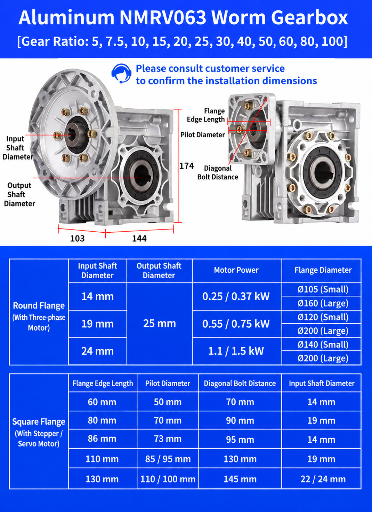

NMRV063 Worm Gearbox Overview
The NMRV063 is widely used with AC motors in conveyors, packaging machines, mixers, material handling and general industrial equipment. Its 90-degree shaft arrangement saves installation space while providing speed reduction and increased output torque.
| Specification | NMRV063 / RV63 |
|---|---|
| Center distance | 63 mm |
| Gear type | Worm gear |
| Common output bore | Ø25 mm |
| Common ratio range | 7.5:1–100:1 |
| Housing | Aluminum alloy |
| Output type | Hollow shaft / optional solid shaft |
| Motor connection | IEC motor flange, subject to configuration |
| Mounting | Multiple positions |
NMRV063 Dimensions
The 63 mm center distance provides a balance between compact size and transmission capacity. The supplied diagram illustrates envelope and flange references, but motor flange dimensions vary with the input shaft and motor frame.
For replacement work, compare:
- 25 mm output bore, keyway and tolerance
- Input flange edge or outside diameter and pilot diameter
- Motor shaft diameter and key
- Mounting-hole locations
- Overall length and height
- Hollow or solid output arrangement
Send the old gearbox nameplate and drawing if the new unit must fit an existing machine without modifying the base or shaft.
What Is the NMRV063 Output Bore Size?
A common NMRV063 hollow output bore is Ø25 mm. The hollow design allows the driven shaft to pass directly into the reducer, reducing couplings and installation length. Confirm the keyway, tolerance and shaft fit—not only the nominal diameter.
A 1-inch shaft is 25.4 mm and is not the same as a standard 25 mm metric bore. Do not force an imperial shaft into a metric bore; ask whether a suitable bushing or customized output arrangement is available.
NMRV063 Ratios and Output Speed
Commonly selected ratios are 7.5, 10, 15, 20, 25, 30, 40, 50, 60, 80 and 100. The supplied image also references 5:1; confirm current 5:1 availability and rated data for the exact unit before ordering.
This is a theoretical calculation. Actual speed follows the motor's loaded rated speed, supply frequency and slip.
| Ratio | 1400 rpm motor | 1800 rpm motor |
|---|---|---|
| 7.5:1 | 187 rpm | 240 rpm |
| 10:1 | 140 rpm | 180 rpm |
| 15:1 | 93 rpm | 120 rpm |
| 20:1 | 70 rpm | 90 rpm |
| 25:1 | 56 rpm | 72 rpm |
| 30:1 | 47 rpm | 60 rpm |
| 40:1 | 35 rpm | 45 rpm |
| 50:1 | 28 rpm | 36 rpm |
| 60:1 | 23 rpm | 30 rpm |
| 80:1 | 17.5 rpm | 22.5 rpm |
| 100:1 | 14 rpm | 18 rpm |
How to Select the Right RV63 Ratio
Start with motor speed and required machine speed. If the motor runs at 1400 rpm and the driven shaft needs about 47 rpm:
A 30:1 NMRV063 is therefore a ratio to evaluate—not a complete selection.
Next verify continuous and peak output torque, service factor, thermal capacity, starts per hour and any radial load from sprockets or pulleys. Our worm gearbox service-factor guide explains why a correct ratio can still be undersized for the duty.
Motor Selection for NMRV063
The supplied dimension chart shows input-shaft references of 14, 19 and 24 mm for several round-flange motor combinations and motor power examples from 0.25 to 1.5 kW. These are configuration examples, not permission to combine every power, input shaft and flange.
Confirm motor power + rated rpm + frame size + shaft diameter + flange + ratio. Voltage, frequency, phase, brake and VFD duty must also match the operating country and machine. See the SMK electric motor specifications and motor-to-gearbox matching guide.
NMRV050 vs NMRV063 vs NMRV075
| Model | Center distance | Typical positioning |
|---|---|---|
| NMRV050 | 50 mm | Compact, lighter-load applications |
| NMRV063 | 63 mm | Balanced size and capacity |
| NMRV075 | 75 mm | Larger loads and higher capacity |
Do not select size only from motor power. Compare output torque, ratio, service factor, shaft load, thermal rating and installation dimensions. The full NMRV worm gearbox product page covers the broader model range.
Typical NMRV063 Applications
RV63 reducers are used in conveyor systems, packaging machinery, mixers, food-processing equipment, agricultural machinery, material handling and industrial automation. For conveyor duty, provide drum diameter, belt speed, conveyed load, incline and starts per hour; see our conveyor gearbox selection page.
What Information Is Needed to Select an RV63?
- Motor power, rated rpm, voltage and frequency
- Required output rpm or ratio
- Continuous and peak output torque
- Output bore, shaft and key dimensions
- Motor frame, shaft and flange
- Mounting position and operating hours
- Application, starts per hour and ambient conditions
- Existing nameplate and dimension drawing for replacements
Conclusion
NMRV063 selection begins with the required speed and 25 mm output connection, then continues with torque, service factor, motor flange, mounting and thermal checks. A ratio calculation narrows the options, but the approved drawing and rated data determine whether the chosen RV63 configuration is suitable.